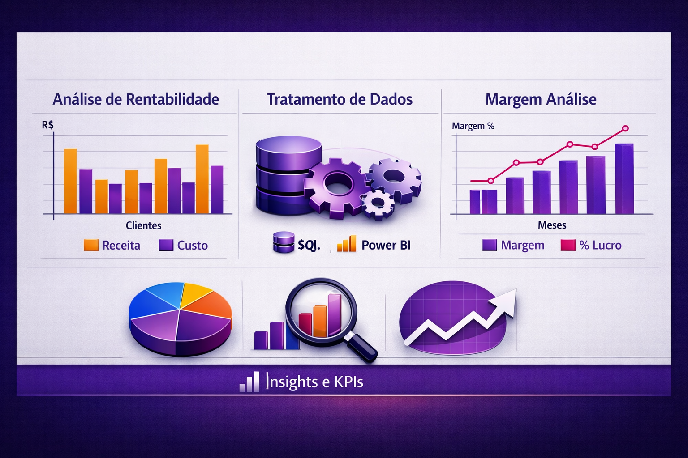
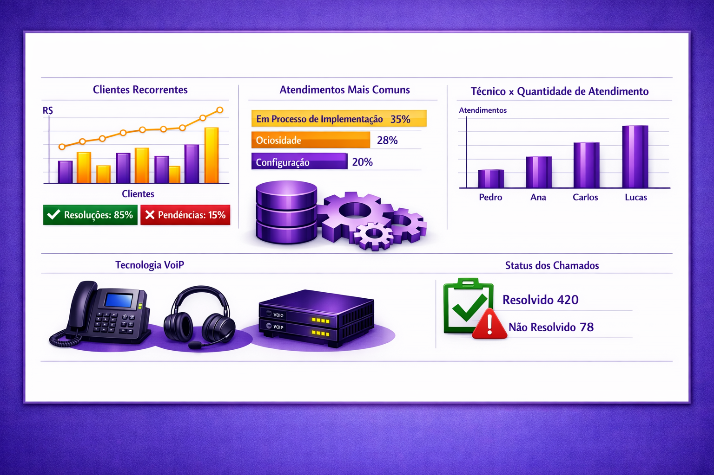
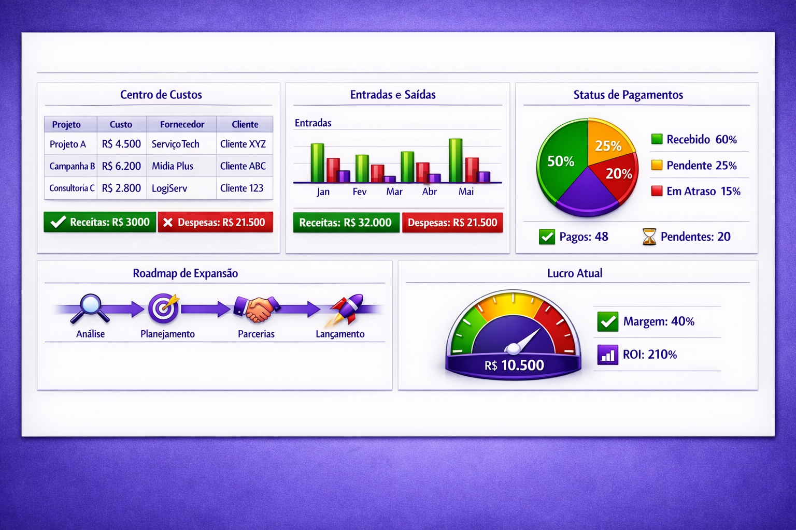

Meus Projetos
Transformo dados em decisões estratégicas, conectando análise avançada a impacto real no negócio por meio de soluções completas de ponta a ponta.

Gestão de Margem e Custos em Operações VoIP
🎯 Contexto de Negócio
Empresa de telecom VoIP precisava acompanhar a rentabilidade dos clientes, comparando custo de fornecedores vs receita gerada. A análise é relevante para identificar clientes com baixa margem, otimizar fornecedores e garantir lucratividade da operação.
📂 Fonte e Estrutura dos Dados
Dados extraídos de banco SQL, armazenados no SharePoint e consumidos no Power BI. Variáveis principais: custo, receita, minutagem, % de tráfego, SIP e plano do cliente. Tratamentos: limpeza, padronização e cálculo de margem.
🔎 Metodologia Analítica
Extração via SQL → Tratamento → Análise no Power BI. Uso de agregações, EDA e cálculo de rentabilidade. Cruzamento de dados entre clientes, fornecedores e tráfego para geração de insights.
query_stats 📈 Principais Insights
Clientes com margem negativa, fornecedores com custo elevado, relação entre plano e rentabilidade, e identificação de rotas com alto volume e baixa eficiência.
ads_click 🧠 Tomada de Decisão Orientada por Dados
Ajuste de preços, priorização de fornecedores mais baratos, redirecionamento de tráfego e ações comerciais focadas em melhorar a margem.
rocket_launch ✅ Conclusão Executiva
A análise trouxe controle da rentabilidade, permitindo reduzir custos, otimizar fornecedores e aumentar o lucro da operação.
Análise de Recorrência de Chamados e Retenção de Clientes
🎯 Contexto de Negócio
A operação de suporte precisava identificar a recorrência de chamados e padrões de falhas. A análise reduziu retrabalho, melhorou o atendimento e apoiou a retenção de clientes.
📂 Fonte e Estrutura dos Dados
Dados analisados manualmente a partir dos chamados, estruturados no SharePoint e integrados ao Power BI. Variáveis: cliente, motivo, técnico, status, frequência, período (dia/noite) e indicativos de cancelamento. Tratamentos: padronização, consolidação de recorrência e organização temporal.
🔎 Metodologia Analítica
Análise dos chamados → estruturação no SharePoint → visualização no Power BI. Aplicação de EDA, identificação de padrões de recorrência e análise de performance dos técnicos. Correlação entre tipo de problema, frequência e efetividade das resoluções.

query_stats 📈 Principais Insights
Identificação de clientes com alta recorrência de chamados, padrões repetitivos nos motivos reportados, falhas na resolução definitiva de problemas e variação na performance entre técnicos. Detecção de horários com maior volume de chamados e relação direta entre recorrência e risco de cancelamento.
ads_click 🧠 Tomada de Decisão Orientada por Dados
Ajustes na atuação dos técnicos, padronização de processos de atendimento, direcionamento de casos críticos para o time de Customer Success e implementação de ações focadas na causa raiz dos problemas. Criação de controles para acompanhamento de recorrência e melhoria na retenção de clientes.
rocket_launch ✅ Conclusão Executiva
A análise trouxe maior visibilidade sobre a operação de suporte, permitindo reduzir a recorrência de chamados, melhorar a eficiência do atendimento técnico e atuar de forma proativa na retenção de clientes. O uso do Power BI possibilitou monitoramento contínuo e decisões mais assertivas baseadas em dados..

Gestão Financeira e Acadêmica para Controle de Receita e Aulas"
🎯 Contexto de Negócio
Empresa Synarchia precisava estruturar o controle financeiro e operacional, acompanhando entradas, saídas e rentabilidade. Análise de desempenho de vendas por período (semanal e geral). Controle de aulas com carga horária, frequência e reposição para maior organização operacional.
📂 Fonte e Estrutura dos Dados
Dados inseridos manualmente no Google Sheets, organizados em abas de controle financeiro e de aulas. Variáveis: receitas, custos, lucro, período, alunos, carga horária, frequência e saldo de horas. Base modelada e integrada ao Power BI para visualização e atualização contínua.
🔎 Metodologia Analítica
Modelagem no Google Sheets → regras de negócio → integração com Power BI. EDA, agregações e análise temporal para vendas, custos e rentabilidade. Análise de frequência e consumo de horas dos alunos.
query_stats 📈 Principais Insights
Identificação de períodos com maior e menor volume de vendas, análise de custos impactando a rentabilidade e visibilidade sobre o desempenho financeiro. No controle de aulas, acompanhamento da frequência dos alunos, consumo de horas semanais e identificação de necessidade de reposição.
ads_click 🧠 Tomada de Decisão Orientada por Dados
Ajustes no controle financeiro, melhor organização de receitas e custos e apoio na definição de estratégias de venda. No operacional, melhoria na gestão de alunos, controle de carga horária e otimização da agenda para evitar inconsistências e perdas.
rocket_launch ✅ Conclusão Executiva
O projeto trouxe organização e visibilidade para a operação financeira e acadêmica, permitindo melhor controle da rentabilidade e gestão dos alunos. A integração com o Power BI possibilitou acompanhamento contínuo, tornando a tomada de decisão mais assertiva e baseada em dados.